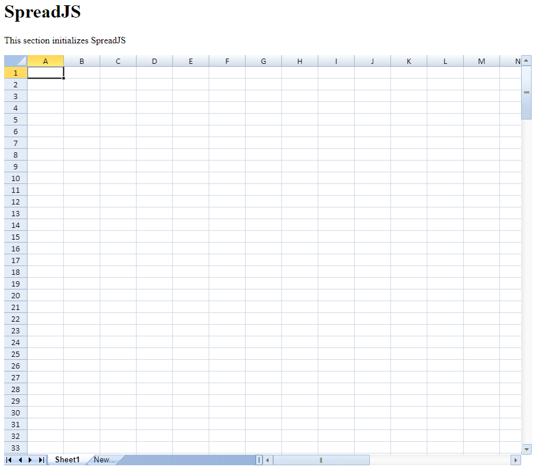

The following quick start section helps you to view SpreadJS widget in a browser. For information on adding references, see ‘Getting Started’ topic.
You can get the latest files for scripts and css file references from here.
Please follow the below steps to create an HTML page to view SpreadJS widget:
var spread = new GC.Spread.Sheets.Workbook(document.getElementById("ss"), { sheetCount: 1 });var spread = new GC.Spread.Sheets.Workbook("ss", { sheetCount: 1 });
| HTML |
Copy Code
|
|---|---|
<!DOCTYPE html> <html> <head> <meta charset="utf-8" /> <meta name="viewport" content="width=device-width, initial-scale=1.0" /> <!-- a) Add SpreadJS Script and CSS--> <!-- a1) Add SpreadJS Script file--> <script type="text/javascript" src="SpreadJS\gc.spread.sheets.all.x.x.x.min.js"></script> <!-- a2) Add CSS File--> <link href="SpreadJS\gc.spread.sheets.x.x.x.css" rel="stylesheet" type="text/css" /> <style> .spread-container { height: 550px; } </style> </head> <body> <h1>SpreadJS</h1> <p>This section goes over how to initialize SpreadJS</p> <div class="sample-container"> <!-- b) Create SpreadJS's target DOM element, HTML DIV with id ss--> <div id="ss" class="spread-container"></div> </div> </body> <script> // c) Initialize SpreadJS in spread-container by div's id "ss" window.onload = function () { var spread = new GC.Spread.Sheets.Workbook( document.getElementById( "ss" ), { sheetCount: 1 } ); // Alternatively, initialize SpreadJS using the DOM ID directly // var spread = new GC.Spread.Sheets.Workbook("ss", { sheetCount: 1 }); }; </script> </html> |
|
Please follow below steps to create an ASP.NET Web application to view SpreadJS widget:
var spread = new GC.Spread.Sheets.Workbook(document.getElementById("ss"), { sheetCount: 1 });var spread = new GC.Spread.Sheets.Workbook("ss", { sheetCount: 1 });
| HTML |
Copy Code
|
|---|---|
<!DOCTYPE html> <html> <head> <meta charset="utf-8" /> <meta name="viewport" content="width=device-width, initial-scale=1.0" /> <!-- a:- Add Script & css file--> <script src="https://code.jquery.com/jquery-2.1.1.min.js" type="text/javascript"></script> <script src="scripts/gc.spread.sheets.all.x.x.x.min.js"></script> <link href="css/gc.spread.sheets.x.x.x.css" rel="stylesheet" /> <script> $( document ).ready( function () { // Note: Apply license key here, before the Workbook is initialized // GC.Spread.Sheets.LicenseKey = " [your Distribution license key here]"; // c:- Initialize SpreadJS in spread-container by div's id "ss" // initializing Spread var spread = new GC.Spread.Sheets.Workbook( document.getElementById( "ss" ) ); // alternatively, initialize SpreadJS using the DOM ID directly var spread = new GC.Spread.Sheets.Workbook("ss", { sheetCount: 1 }); // get the activesheet var sheet = spread.getActiveSheet(); } ); </script> </head> <body> <h1>SpreadJS</h1> <p>This section initializes SpreadJS</p> <!-- b:- Create SpreadJS's target DOM element, HTML DIV with id ss--> <div id="ss" style="height:700px;width:900px"></div> </body> </html> |
|
